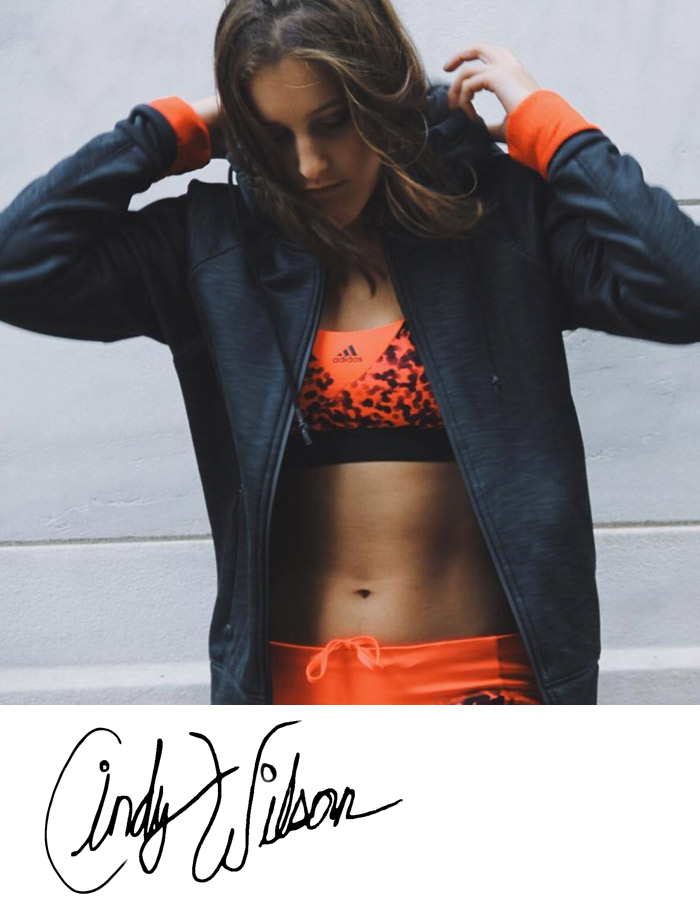

Introducing Cindy
New York, USA Posted yesterday

"Boston Marathon or bust baby!"

I've always wanted to run a marathon. It's definitely on my bucket list. I love running but finding the time to put in the hard yards to do some serious distances can be really hard to work in around work and life generally.
By the time fall comes around each year I'm usually pretty fit, but then the trees turn red and the temperature drops... and before you know it the first snow fall of winter lands. The beautiful running paths of Brooklyn and Manhattan become icy white tracts of snow.
Then the holiday season kicks in and my routine goes out the window. I manage a few gym sessions but my 20km runs twice a week drop down to 10km once a week. So last year I took the plunge and signed up to the Boston Marathon for April 2017.
No excuses now: I have to keep training and running this winter

I'm out in the cold and ice every morning now and I'm loving it. But I'm also mixing up my program: strength training and just as important as interval training so I've signed up for kickboxing at my local gym.
When I'm running I want to be as lightweight as possible. Speed is my priority - but I still want to look good. A good pair of running shoes cement both. The latest Pureboost X are the perfect shoes for style and performance. They look awesome with anything and give me plenty of support with a super light weight body. They handle the icy conditions really well too.
You can't beat running across The Brooklyn Bridge
My favourite route without a doubt is across the Brooklyn Bridge. Not only is the view breathtaking but running across such an iconic structure is really inspiring. It's also a helluva workout: the gradient is intense and really hard work going up but going down you get some great speed and it's exhilarating sprinting towards the end to try and catch your PR.
I joke with my friends that when I'm not running I'm on my way to the gym! What I wear when I'm not running is when I spend more time thinking about style. But comfort is still a necessity, especially commuting to work (or coming home from the gym!).

"THE GYM WITHOUT MUSIC IS HELL".
Along with kickboxing I'm also doing regular indoor training - the snowfall in January here was insane so often I didn't have much choice but to hit the treadmill.
I'm not exactly a music snob but gym music, well, really sucks. Being a Texan born-and-bred I still love some good country. Lately I've been getting into First Aid Kit, although I recently found out they're from Sweden which really blew my mind. Apart from that I also love some classic Cash and I'll even admit a bit of Taylor Swift comes on my Spotify now and again.
"MY PHILOSOPHY? LIVE LIFE TO THE FULLEST"
I play and train hard and while I like to stay healthy I do love some good food. I have a hell of a sweet tooth I've never been able to budge but I try to satisfy it with fruit and wholesome grains etc. rather than chocolate or soda. At then end of the day you need a reward for all that hard work.
Check out Cindy on social media and follow her on Instagram, Strava and YouTube. Also check out her blog where she writes about training, running, style and nutrition.
More recent profiles: